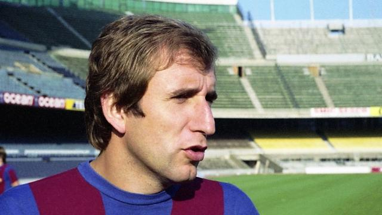

Carles Rexach

Hijo de la cantera barcelonista, era un extremo derecho de técnica exquisita que
destacaba por su gran dribbling, excelente visión de juego y magistrales lanzamientos
de penalti y golpes francos. Sin embargo, parte de la afición a veces le reprochaba su
aparentemente excesiva sangre fría. Con 656 partidos disputados, es el segundo jugador
barcelonista en este apartado, y con 197 goles –aunque no jugaba de delantero centro-
es el octavo máximo goleador de la historia azulgrana.
Retirado en 1981, ha protagonizado una densa etapa en el 'staff' técnico del equipo,
primero en el fútbol base, después como segundo de Luis Aragonés (1987-88) y Johan Cruyff
(1988-96, los gloriosos años del 'Dream Team'), y finalmente como primer entrenador en
la temporada 2001-02, una época difícil para el FC Barcelona.